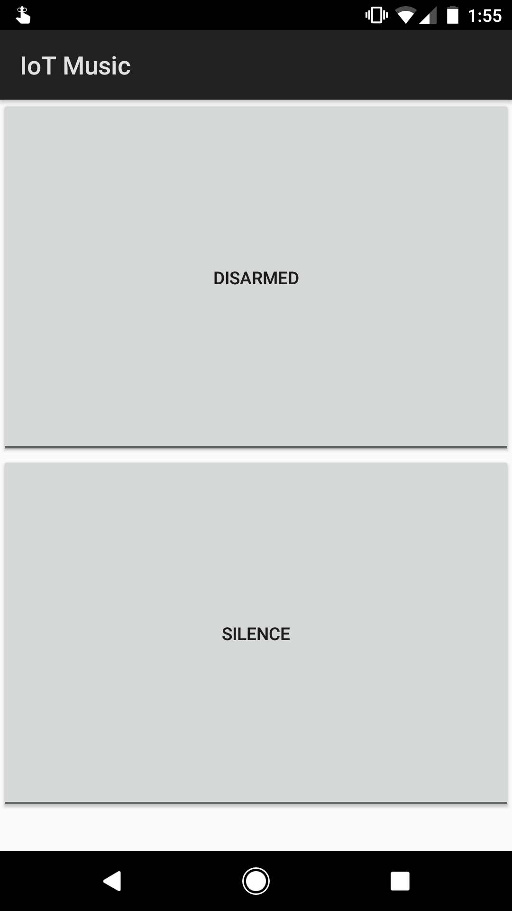

IoT Security Platform
An end-to-end solution for security on any door in any building or home with a seamless interface for monitoring and management.
We developed a WiFi enabled doorway security system accessible from anywhere in the world. One of the motiviations behind this project was derived from the contemporary notion that the concept of IoT presents security vulnerabilities. We thought that it would be a not only ironic but also useful twist to leverage IoT to provide security instead.
Features
High Level Design
Our original project was to develop a low-cost WiFi audio streamer inspired by the widespread emergence of smart home devices such as the Google Home and Amazon Alexa. Initially, we planned to leverage SPI from a WiFi module for a high data rate to enable seamless streaming of 16 bit audio at a 44khz sampling rate. Unfortunately, due to limitations of the WiFi module, we were forced to use UART for data transfer from the module to the PIC32. Theoretically, streaming music is possible over UART. Playing 8 bit audio at 8khz would require the PIC32 to receive at least 8KB per second. A baud rate of 115200 gives us 11,520 samples per second from the WiFi module due to start and stop bits. Our design was simple; a web server would send WAV samples to the ESP8266, which would control the flow of samples being sent to the PIC32, which would parse the data into a sound buffer which would be played via a 12 bit DAC. However, several setbacks forced us to set that idea aside for our current, more practical security system for monitoring access through a door.
First, it took us several weeks to fully integrate the ESP8266 with the PIC32 as we ran into several issues. Our original intention with the ESP8266 was to program it using the Arduino IDE so that we could have greater control over how we send and receive data over TCP and so we could leverage SPI. However, for some unknown reason, the ESP8266 not only failed to run very basic programs that were programmed onto it but also lost the ability to process AT commands even after reflashing its default firmware. As a result, we were restricted to only AT commands over UART to interface the PIC32, which proved to be insufficient for controlling the bandwidth required for the PIC32 to parse and stream the WAV data. We will expand on how we might implement music streaming on the PIC32 if we were given more time in a later section.
With our ESP8266, we had the ability to send and receive any sort of data we wanted provided the bandwidth required was not as intensive as music streaming. We decided that given our capabilities with the WiFi module, we wanted to be able to chart and log some sort of data, while also providing a practical use with that data. We brainstormed how we might integrate the data we receive from analog sensors with the internet. We decided to use a distance sensor in order to detect motion and implement a security system similar to modern home security systems from companies such as ADT, FrontPoint and Nest. This was relatively simple to implement since we had already spent time developing mobile and web applications for our original music streaming project, and so the majority of the time for developing our security system was spent on interfacing the distance sensor with the PIC32 and sending that data over TCP to be charted on our web application. The system works as follows:
- At start, the PIC32 sends the ESP8266 AT commands over serial to establish a connection to a TCP socket via the module.
- Then, the PIC32 enters a loop to continuously read the sensor data via an ADC.
- Upon any movement detection, the PIC32 sends a set of AT commands to the ESP8266 commanding it to send the keyword string “event” to the socket server.
- The server logs this data and informs the web GUI of the new data, via Server Sent Events (SSE), such that it charts the traffic of the motion sensor in real time.
The alarm system is disarmed at default, so each motion detection is logged in our web application, but no sound is played. From both the web application and phone, the user is able to arm the alarm, causing it to play an alarm sound when it detects motion. Alternatively, the user can also play the alarm on demand in case the user wants to test the speakers or immediately signal an event/emergency.
The primary hardware/software tradeoff present in this system involves the appropriate handling of UART communication with the ESP8266. For example, if two successive commands are sent without waiting for the appropriate response message in between each command, the module begins to spit out incomprehensible information as it cannot handle that sudden inflow of information. As a result, the software was carefully crafted to enable a thread blocking mechanism that can support waiting for specific response from the module before proceeding onwards to the next instruction in the execution path.
The ESP8266 can connect to any WLAN implementing the IEEE 802.11 b/g/n specification which includes networks provided by Cornell University such as RedRover. Our TCP socket communication data format abides by ASCII, a byte level character encoding using only the bottom 7 bits. Endianness discrepancies between systems was fortunately a non-issue. Of course, UART communication remains in line with the RS232 specification. There are no patents, copyrights, or trademarks relevant to our system.
Software/Hardware Design
Software
PIC32 - Main
We have two main threads on the PIC32, one for the main setup and sensor data processing as well as one for receiving TCP data via UART from the module and for playing the alarm audio accordingly.
The main thread initializes by sending a series of AT commands to the ESP8266 to configure it and connect it to the web server:
- AT+CIPCLOSE closes any WiFi connection currently on the module if there is any. This is required for the security system to be able to successfully connect to the socket server.
- ATE0 disables echo mode on the ESP8266 so that we do not receive echoed commands in our PIC32 serial buffer.
- AT simply makes sure that the ESP8266 is working properly and responding to our commands.
- AT+CIPMUX=0 configures the module for only a single IP connection.
- AT+CIPSTART connects the module to the socket server over TCP.
After initialization, the ESP8266 is successfully connected to the socket server and bidirectional data transmission from/to the PIC32 is enabled. The main thread constantly reads an ADC channel connected to our distance sensor, and compares it with a calculated, pre-set threshold in order to detect someone moving past the sensor. If we detect a falling edge, we issue a command over UART to the module which informs the server that someone has moved pass the sensor.

The distance sensor outputs a high voltage when the object is closer, so when the object leaves the field of view of the sensor, our program will detect that falling edge.
The receiving thread handles the arming and disarming of the security system as the web and mobile application has the ability to arm, disarm, and sound the system. The receive thread infinitely loops to receive commands from the socket server that have been issued to the PIC32, and will play the alarm sound accordingly if the system is armed and motion is observed via the sensor or if the socket server directs the PIC32 to play the sound immediately regardless of motion detection.
The alarm sound is a short 1.1 second wav file played at 11khz and is represented as a table of short values placed in a header file. In order to simulate a repeating alarm sound, we set the DMA mode to auto and we abort the transfer on disarming the alarm which is an event received over the TCP socket and subsequently over UART from the module.
PIC32 - ProtoThreads
In order to appropriately handle data received from the WiFi module, we had to modify Bruce Land’s threading library, an extension of Adam Dunkel’s ProtoThreads library, to disable UART echoing as well as to support the line endings that the ESP8266 provides. Further, we had to develop additional functions that enabled timing out UART receives as well as reading character by character. Our modifications to the protothreads library can be found in the appendix.
Server
Out socket server is a Node.js TCP socket server that reads for the keyword “event” as mentioned above in the High Level Design and sends the data to the frontend via Server Sent Events (SSE).
Our web server is a Node.js HTTP API for arming, disarming, playing sound on demand, and for subscribing to SSE in order for the frontend to receive real time data efficiently.
Mobile
Our mobile application is made for Android and is a simple Kotlin application with two toggle buttons tied to HTTP requests sent to the web server to perform the appropriate action, namely arming, disarming, and sounding the alarm.
ESP8266 WiFi Module Problems
- Sending two successive commands too quickly without waiting for the appropriate response message in between each command sends the module into a state of unspecified behavior.
- You should disable echo on the ESP8266 by sending it ATE0 so that the ESP8266 echos do not interfere with the UART receive parsing on the PIC32.
- Although you must leverage the carriage return and line feed line endings when sending commands to the module, it does not necessarily respond with carriage return and line feed line endings. It’s most reliable to just split on the line feed character (with the exception of the case mentioned below).
- We had to receive character by character, rather than newline oriented, after the CIPSEND command to find the “>” special character which indicated the module’s readiness to receive data to be sent.
- CIPSEND had to specify a length one longer than the actual data length when the command is being sent from the PIC32. The behavior of the ESP8266 is not exactly the same when it is connected via serial to a computer than when it is connected via serial to the PIC32.
- The module non-deterministically chunks multiple TCP receives into single IPD responses. If large amounts of data are being sent to the ESP8266, we recommend adding delimiters so it can me more easily parsed.
- The module does not close TCP connections on RESET, so CIPCLOSE must be called at the start of the program before the ESP8266 attempts to establish a new TCP connection.
Audio Streaming Problems
We spent a significant amount of time trying to get audio streaming to work using only the TCP connection between the ESP8266 and the web server, and the UART connection between the ESP8266 and the PIC32. Here are some of the problems we ran into while we tried to implement this system.
- Due to the low data rate, we attempted to encode 12 bit audio using 2 byte samples where each byte’s 7th bit indicates whether it was the top or lower 6 bits of the 12 bit sample but still could not hit the required timing.
- Even using a baud rate of 115200, it is mathematically impossible to play anything beyond 8 bit audio at 8khz even with the above encoding.
- Unfortunately, even 8 bit audio at 8khz was not possible despite all of our optimizations. Given more time, this problem could potentially be resolved by implementing a rudimentary feedback system in which the PIC32 notifies the web server via the ESP8266 how much data it has left in its buffer.
- Parsing time is heavily limited because there are very few clock cycles allowed in between UART receives to avoid missing data. In order to combat this issue, we also tried to separate the UART receiving into a separate thread such that it would not block on the parsing but, unfortunately, due to RAM limitations, this was also infeasible as there was not enough capacity to buffer up the UART data to be parsed.
Hardware

Our hardware consists of two main modules, a PIC32 microcontroller and an ESP8266-01 WiFi module. The WiFi module we used is very rudimental, and we found that the lack of clear, official documentation for the module made it very difficult to get it set up and running. For our purposes, we set the GPIO pins on the module to floating in order to boot it in normal mode, which enables AT commands, most of which are well documented by the community. Booting the module into programming mode requires pulling GPIO-0 to ground on startup, but we did not have any success programming or reflashing the board in this mode. Although this setback did not allow us to complete our audio streaming idea, it did make the overall system simpler and more intuitive, as no program needs to be uploaded to the ESP8266 for this system to work. Additionally, the module is not designed to be plugged into a breadboard, so we created our own mount for it so that we can easily connect it to the PIC32 via the breadboard without using any header wires.
ESP8266 Module
The module connections are as follows:

- RXD must be connected to TX on the PIC32
- TXD must be connected to RX on the PIC32
- VCC must be connected to 3.3 V
- GND must be connected to a common ground with the PIC32
- RST must be floating. Since RST is triggered by being pulled to ground, we recommend connecting this pin with a button connected to ground to act as a reset button for the module.
- CH_PD must be connected to 3.3 V
The mode in which the ESP8266 boots up is determined by the GPIO pins. In order to boot up the module in normal mode, both GPIO0 and GPIO2 must be floating. Normal mode is the mode we used for this project, and enables AT commands on the ESP8266. In order to boot up the module in programming mode, GPIO0 must be pulled to ground and GPIO2 must be floating. We did not have any success with programming mode on this specific module for the ESP8266, so we recommend keeping both pins floating. One of our colleagues had success with programming the ESP8266 using a more expensive module from adafruit. You can find it here. In addition, the module draws a significant amount of current, so we recommend attaching a 1 µF capacitor across Vcc and Ground.
UART
By connecting the ESP8266 to the PIC32 via RX and TX, we essentially enable the PIC32 to send and receive data to the internet simply by sending AT commands over UART to the ESP8266. The diagram below demonstrates how UART transmits data.

For our system, we used a baud rate of 115200 bps, but a baud rate of 9600 bps could also be used since we are not sending or receiving large blocks of data. The largest block of data we send or receive via UART is the string of 6 characters, “event\n”, which is sent from the PIC32 to the ESP8266. For our previous application of audio streaming, a high baud rate was of utmost importance due to the size of music files and the need for a high sampling frequency.
Distance Sensor
By interfacing WiFi with the PIC32, we were able to easily integrate a simple distance sensor into the internet-of-things. The distance sensor we use can accurately detect up to 80 cm, and we determined it was sufficient for our purposes of sensing movement through a door or entryway. The sensor is connected to an ADC channel of the PIC32, which compares the reading to a constant value. The distance measuring characteristics of the sensor can be seen below.

We design the security system such that the distance sensor will be facing down from the top of the entryway. The height of a standard door well exceeds the sensor’s max accurate distance of around 80 cm, which allows us to easily track any spikes in its readings. When an object passes by the sensor, the distance will decrease significantly, causing the sensor reading to spike up.
Once the sensor detects a falling edge of readings, or in a physical sense when someone has passed the entryway, the sensor will send an event to the web server via the ESP8266, and the web server will direct the data to be charted to a web frontend.
Audio
In order to enable the alarm sound for the system, we simply connected the PIC32 to the DAC, whose output was connected to a small speaker attached to our breadboard. The alarm sound is generated by setting the SPI in framed mode so that the DMA can directly output the the sound table to the SPI, which is connected to the DAC. Using this setup allows us to play the alarm sound without using an ISR, and therefore be able to continue to detect motion and receive commands from the mobile/web application.
Results
TODO
Conclusions
TODO
Appendices
A. The group approves this report for inclusion on the course website. The group approves the video for inclusion on the course youtube channel.
B. Program Listing
Our full repository of source code can be found here.
Below are our slight modifications to Bruce Land's pt_cornell_1_2_2.h:
C. Schematics
D. Bill of Materials
| Part Name | Part Number | Vendor | Price |
|---|---|---|---|
| Small Board | - | Lab | $4.00 |
| White Board | - | Lab | $6.00 |
| Power Supply | - | Lab | $5.00 |
| PIC 32 Microcontroller | PIC32MX250F128B | Lab | $5.00 |
| 12-Bit DAC | MCP4822 | Lab | $3.15 |
| Wifi Module | ESP8266 | MakerFocus via Amazon | $3.25 |
| Distance Measuring Sensor | GP2Y0A02YK0F | Sparkfun | $14.95 |
| 2 Tactile Push Buttons | PTS635SL43 LFS | Lab | $0.80 |
| Capacitor | TODO | Lab | $1.00 |
| Small Solder Board | - | Lab | $1.00 |
| 16 headers | - | Lab | $0.80 |
| Piezo Speaker | CEP-1141 | Lab | $0.90 |
| Total | $45.85 |
E. Work Distribution
F. References